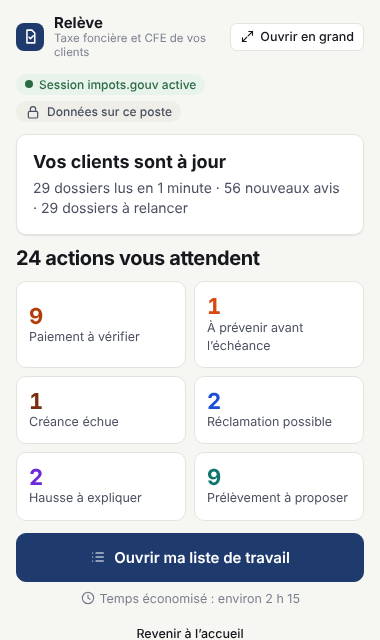

Les avis de taxe foncière et de CFE de tous vos clients, triés par urgence.
Un bouton dans votre navigateur. Relève lit les avis dans votre espace professionnel impots.gouv, repère les paiements à vérifier et explique chaque hausse.
Conçu par un expert-comptable, pour les cabinets : Romain Froment.
Version 5.2.3 · Chrome ou Edge, Windows ou Mac · gratuit · fonctionne aussi avec Claude

Ce que vous obtenez
Une liste de travail
Paiements à vérifier, clients à prévenir avant l’échéance, créances échues, bases à contrôler, hausses à expliquer. Les plus urgents en premier.
Chaque hausse expliquée
Part des taux votés par la commune et l’intercommunalité, part des bases, biens nouvellement imposés. Avec une vue de toutes vos collectivités.
Le message au client prêt
Un clic prépare le brouillon dans Outlook avec l’avis en pièce jointe. Vous relisez et envoyez. Excel, PDF et synthèse sur demande.
Questions en un clic
« À prévenir sous 7 jours », « Plus fortes hausses », filtres par commune ou collaborateur : la réponse est exacte et immédiate. Avec Claude, ses réponses s’affichent ici avec les vrais noms.

Données fictives.
Vos données restent chez vous
Installer en 3 minutes
Téléchargez le fichier, décompressez-le dans Documents, puis ajoutez-le à Chrome ou Edge. Le mode d’emploi montre chaque clic.